Getabalew Manegerew
Aspiring Theoretical Physicist
An aspiring theoretical physicist, ranked #1 in the Addis Ababa University Class of 2026. I have complemented my four years of undergraduate study with numerous self-learnings, both as part of the program and outside of this domain, ranging from mathematical physics courses to computational skills. This includes MIT OCW and UC Berkeley's Python for Physics summer school.
I have contributed a number of computational physics problem solutions in Fortran and Python in my GitHub repos as part of a two-semester computational physics course. The problems I explored range from classic numerical approaches on calculus to practical simulations of physical system models. Those problems immensely shaped my senior thesis project on "Direct Collisional Method of Molecular Dynamics Simulation", which blends the computational efficiency of DSMC and particle history from MD.
In practical settings, I led an undergraduate research team working on the Quarknet cosmic muon detector system. In our six-month stay, we resolved a GPS firmware malfunction and proposed a very inexpensive way of demonstrating the need for relativistic treatment of atmospheric muons under the Earth's magnetic field.
In addition to that, my internship at ECAE set the stage for translating classroom problem-solving skills into real-world applications. Through this progress, I did independent self-learning on database systems and MS Access, which culminated in building a modern and user-friendly national-level dosimetry database system that ultimately replaced an outdated one. My experience as a teaching assistant for statistical mechanics also sparked an inspiration toward breaking down complicated ideas into swallowable chunks, heavily relying on analogies based on my use case.
Education
Bachelor of Science in Physics
Addis Ababa University | Graduating June 2026
Cumulative GPA: 4.00/4.00 (#1 Ranked in Class of 2026)
- Core Theory: Classical Mechanics, Quantum Mechanics I & II, Electrodynamics I & II, Statistical Mechanics, Mathematical Methods I & II.
- Relevant Courses: Astronomy and Astrophysics I & II, Computational Physics, Nuclear Physics.
Undergrad Research Team Led
Investigation of Atmospheric Muon Angular Flux Variation
Addis Ababa University | March - August 2025
In this project, I led a team of three undergraduates under the supervision of Dr. Tilahun T.. Initially, our primary aim was to diagnose a GPS firmware malfunction within the QuarkNet muon detector system, restoring its full data acquisition capability. The project later expanded to investigate the variation of atmospheric muon angular flux under different conditions.
I was actively involved in every aspect of the research, from initial planning to final execution. Diagnosing and troubleshooting the GPS system introduced me to terminal emulation systems. Simulating the trajectory of atmospheric muons within Earth's magnetic field using Python, alongside rigorous experimental data collection, provided me with invaluable, hands-on exposure to undergraduate research.
This six-month research experience concluded with an extensive data collection phase and the authorship of a faculty-approved research proposal. The proposal, titled "Newtonian vs. Relativistic Trajectories of Atmospheric Muons: An Experimental Comparison," sought to reveal the necessity of relativistic treatments for atmospheric muons interacting with Earth's magnetic field.

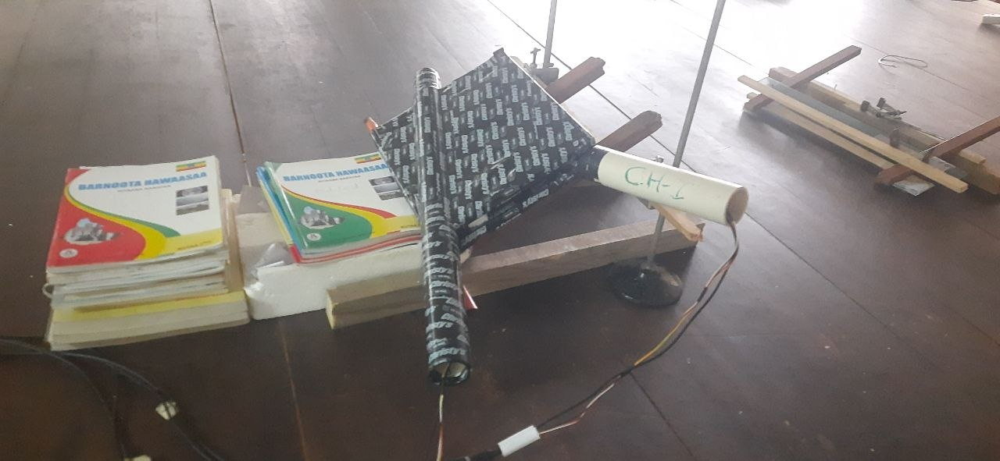
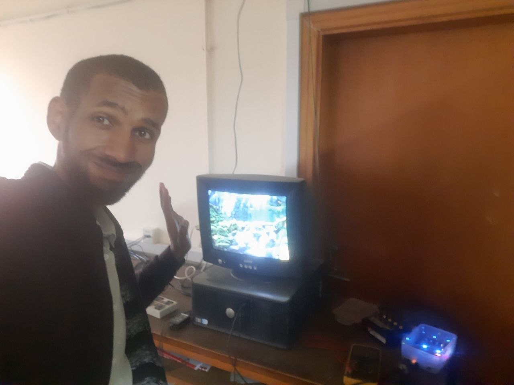
Internship
Radiation Spectrometry Intern
Ethiopian Conformity Assessment Enterprise (ECAE) | June - Sept 2025
A three-month internship at the Ethiopian Conformity Assessment Enterprise (ECAE) provided an excellent opportunity to solve practical problems. Alongside my colleague Yeabsira, I built a new database system to replace an outdated data management system used for the national dosimetry program. The new database, powered by Microsoft Access, offered a practical and user-friendly interface for ECAE staff. Having had no prior exposure to database systems or MS Access, this project was a fantastic test of our self-learning abilities—a skill heavily cultivated during our undergraduate studies.
Furthermore, we had the opportunity to work with an ORTEC HPGe gamma spectrometer and an alpha spectrometer. These instruments demonstrated the profound importance of applied physics in an industrial setting. I also learned firsthand how practical tasks introduce complexities not often found in theoretical classroom environments, particularly the critical importance of geometry and precise calibration for accurate readings.
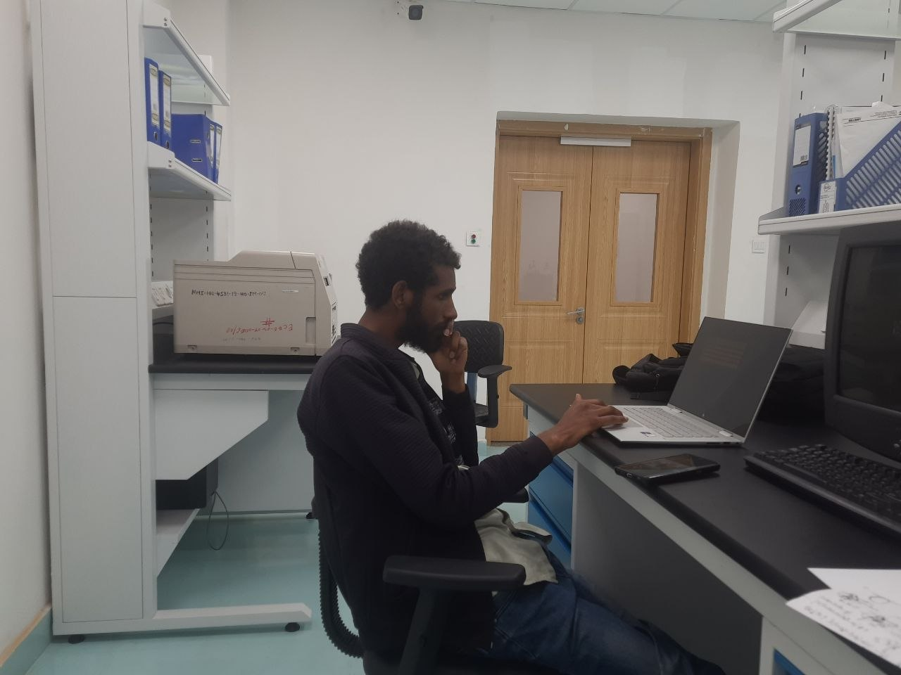
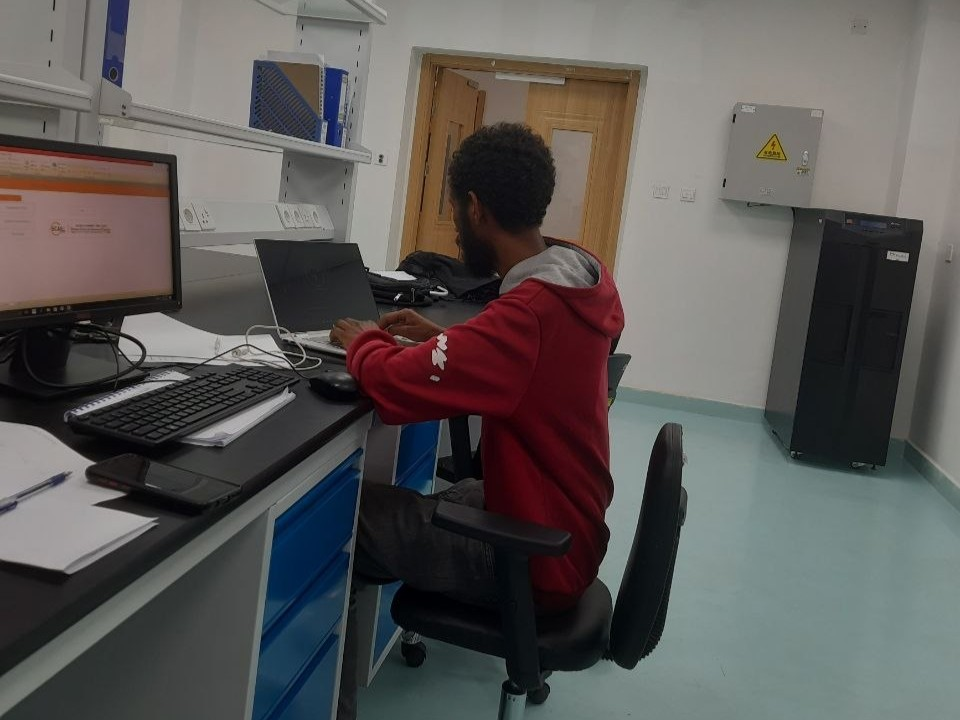
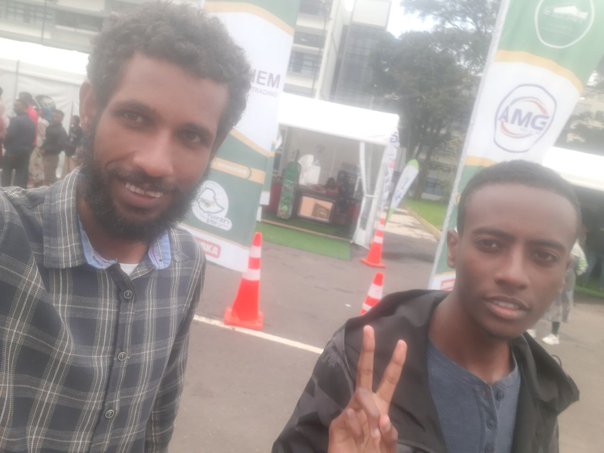
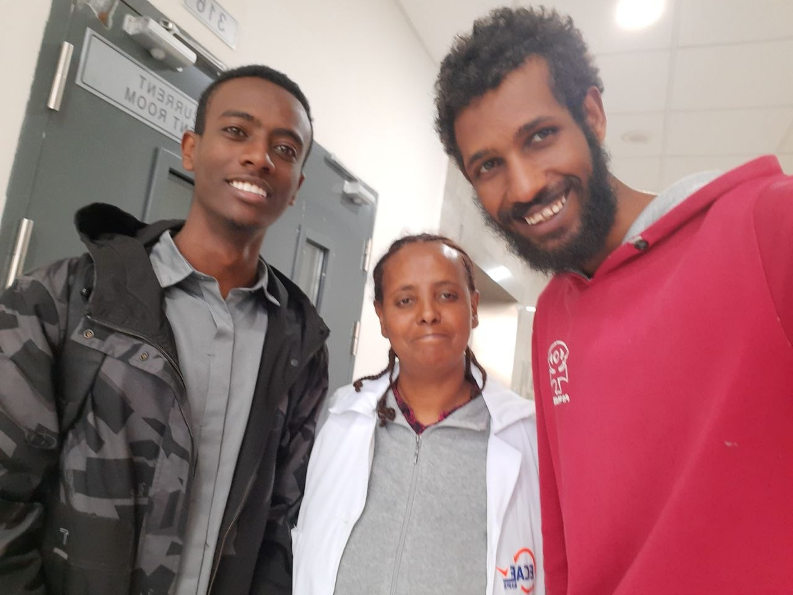
Senior Thesis Project
As part of my senior thesis project, I proposed a new computational model for rarified gases that blends DSMC and MD approaches under my advisor Dr. Lemi D.. This method is primarily based on the hard sphere model and direct collisional interaction of each simulating molecule. The approach preserves the history of each particle as it is the case for MD, however the computational efficiency is significantly smaller. The implementation of this project is based on Fortran 90, which was written by myself. Also for analysis of computational data outputs, I have been using python libraries such as Numpy, Matplotlib and Pandas.
In short, this project has gave me an opportunity to propose and solve my own research question. In addition to that it has the elements of hands-on experience on applying theoretical analysis beyond classroom settings, i.e. collision dynamics. It was also a chance to develop my computational skills on Fortran and Python.
Project Resources & Files
Abstract
Computationally simulating liquefied or rarefied gases remains an established approach in investigating problems in engineering and physics. This is accompanied by a growing volume of computational models for a given type of problem. The aim of those models is to mimic the phase space of real-world systems in a computational environment in a less expensive way. In this study, a new computational model that blends important features of Direct Simulation Monte Carlo (DSMC) and Molecular Dynamics (MD) is proposed, with the assumption of a hard sphere particle model. Under the study of equilibrium gases, physical parameters such as mean free path and specific heat capacity were found to lie within the same order of magnitude as theoretical analysis. The proposed model can be easily extended to account for external effects such as electromagnetic forces, with a functional working regime in non-equilibrium conditions.
Results
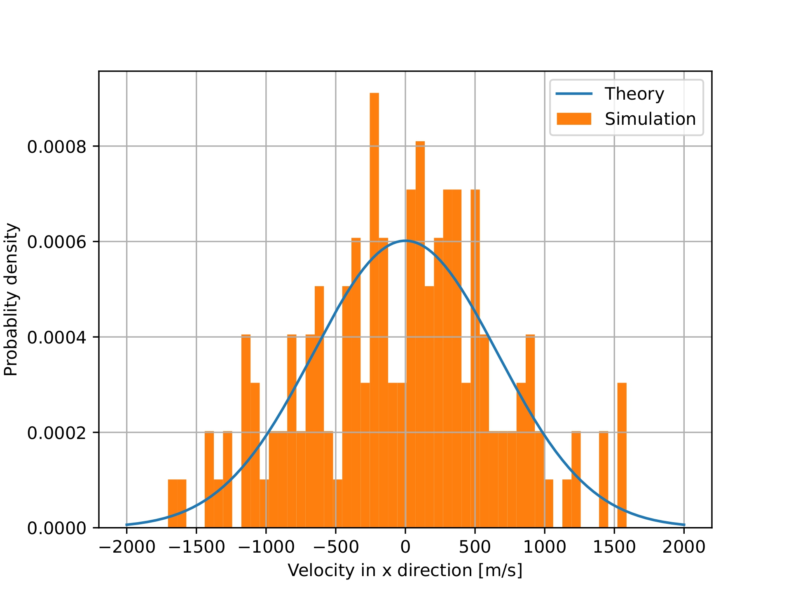
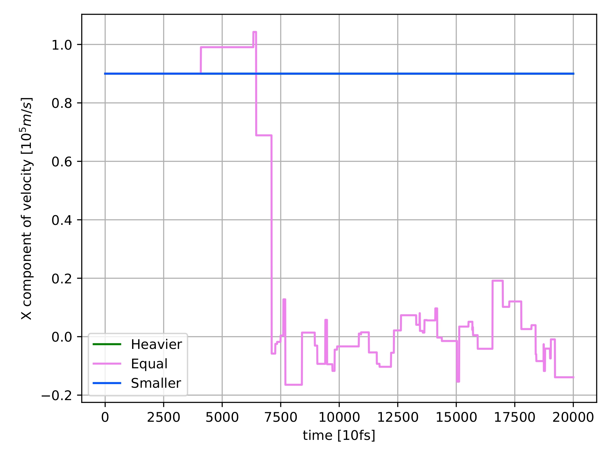
| Quantity | Computed Mean | Theoretical Mean |
|---|---|---|
| \(\langle E \rangle\) [\(10^{-21}\) J] | 1.9269 | \(\tfrac{1}{2}k_bT = 2.3665\) |
| \(\langle c_v \rangle\) [\(10^{-24}\) J K\(^{-1}\)] | 5.3879 | \(\tfrac{1}{2}k_b = 6.9\) |
| \(\lambda\) [100 nm] | 1.2158 | 6.0012 |
Table 1: Computed vs. theoretical means at \(T = 343\) K, number density \(n = 2.34 \times 10^{24}\ \text{m}^{-3}\), over a 1.7 μs window with \(dt = 0.1\) ps. Energy and specific heat capacity land within the same order of magnitude as theory; the mean free path shows a consistent offset discussed in the full paper.
Collision Kernel Code Snippet
!=======================================================================
! collision kernel
!=======================================================================
loop5: DO WHILE (t < t_span)
! updating time and positions
t = t + dt
X = X + V*dt
count = count + 1
! recording tracer particle
Vx_tracer(count) = V(1,1)
X_tracer(count) = X(1,1)
Y_tracer(count) = X(1,2)
loop6: DO i = 1, Np
loop7: DO j = i+1, Np
! looking for approaching particle pairs
IF (SUM((X(i,:) - X(j,:))**2) < dl**2) THEN
v_r = V(i,:) - V(j,:) ! relative velocity
v_cm = (M(i)*V(i,:) + M(j)*V(j,:)) / (M(i) + M(j)) ! center of mass velocity
m_reduced = M(i)*M(j) / (M(i) + M(j)) ! reduced mass
! generating normalized random 3D vector for post-collision direction
CALL RANDOM_NUMBER(rand)
rand = 2*rand - 1
rand = rand / SQRT(SUM(rand**2))
v_r = SQRT(SUM(v_r**2)) * rand
r_hat = (X(i,:) - X(j,:)) / SQRT(SUM((X(i,:) - X(j,:))**2)) ! unit separation vector
! updating velocities and resolving overlap
V(i,:) = v_cm + (m_reduced/M(i)) * v_r
V(j,:) = v_cm - (m_reduced/M(j)) * v_r
X(i,:) = X(i,:) + 0.6*dl * r_hat
X(j,:) = X(j,:) - 0.6*dl * r_hat
Ncol = Ncol + 1
END IF
END DO loop7
! imposing periodic boundary condition
loop8: DO j = 1, D
IF (ABS(X(i,j)) > l) THEN
X(i,j) = X(i,j) - 2*l * NINT(X(i,j)/(2*l))
boundary_hit = boundary_hit + 1
END IF
END DO loop8
END DO loop6
END DO loop5Teaching Experience
Teaching Assistant: Statistical Mechanics
Addis Ababa University | Oct 2025 - Jan 2026
"Statistical Mechanics was one of the most exciting courses that I came across in my undergraduate study. The peculiar idea of introducing measurable macroscopic properties from random microscopic configurations deserves tremendous appreciation. I approached my role as a teaching assistant for this course with high energy, mastering the rigorous formalities of the subject along the way. This role helped me transfer complicated concepts into relatable analogies, while the computational outputs developed throughout my recitation preparations served as bridges connecting theoretical concepts to computational frameworks."
Key Contributions & Recitation Topics:
- Designed and led comprehensive recitation sessions to help students navigate the rigorous formalities of statistical mechanics.
- Authored detailed notes covering foundational topics, from the essences of binomial distributions to the ergodic hypothesis.
- Guided students through complex statistical approximations, including the Gaussian approximation of binomial distributions and the derivation of the Boltzmann distribution.
- Developed practical exercises and visual illustrations addressing the density of states, canonical ensembles, and the applications and limitations of the equipartition theorem.
Guest Lecturer: General Physics (Phys1011)
Invited by Dr. Tesgera B. | December 2025
"I delivered a thoughtful and inspirational guest lecture on 'Revisiting Laws of Thermodynamics' at the invitation of my Professor, Dr. Tesgera B. The lecture explored the ways thermodynamics has shaped our civilizations and how things that appear possible can actually be drastically improbable in our vast universe."
Lecture Highlights:
- Delivered an engaging session titled "The Laws of Thermodynamics," exploring the fundamental rules governing energy, work, and heat.
- Analyzed the impossibility of perpetual motion machines of the first and second kind to ground abstract theoretical laws in physical reality.
- Broke down the 0th, 1st, and 2nd Laws of Thermodynamics, discussing concepts from thermal equilibrium to the Kelvin statement and the "Heat Death of the Universe".
- Facilitated an interactive student discussion on information and probability, utilizing a thought experiment about Isaac Newton's birthday to illustrate the second law's limit on usefulness.
Projects & Coursework
In this repository, I included solutions on my assignment and quizzes in taking computational physics course. The course is Fortran based, and for data visualization I employed Gnuplot and Python; Numpy and Matplotlib. The document includes the codes with visualization.
Featured Computational Physics Projects
Simulation of the Boltzmann Distribution (Metropolis Algorithm)
Implemented the Metropolis Monte Carlo algorithm to sample a model system's equilibrium states, verifying convergence to the Boltzmann distribution against theory.
Numerical Simulation of Linear and Non-linear Pendulum
Numerically integrated the equations of motion for both the small-angle (linear) and full non-linear pendulum, comparing period and phase-space behavior between the two regimes.
Ising Model in 1D Implementation
Built a one-dimensional Ising model with Monte Carlo spin-flip sampling to study magnetization and energy behavior as a function of temperature.
Numerical Estimation of a Falling Object with Air Resistance
Solved the nonlinear ODE for a body falling under quadratic air drag, comparing the numerical trajectory and terminal velocity against the idealized no-drag case.
Additional Coursework
Honours, Certificates & Scholarships
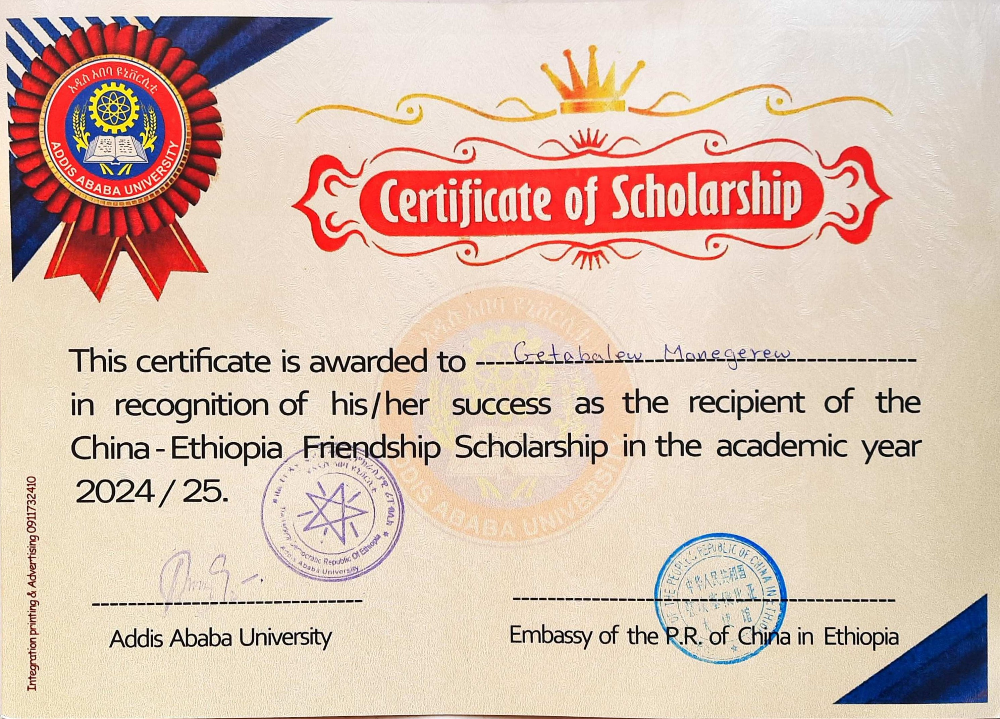
China-Ethiopia Friendship Scholarship
Awarded by: Addis Ababa University & Embassy of the P.R. of China in Ethiopia
Academic Year: 2024 / 2025
Awarded in recognition of academic success as the recipient of the China-Ethiopia Friendship Scholarship.
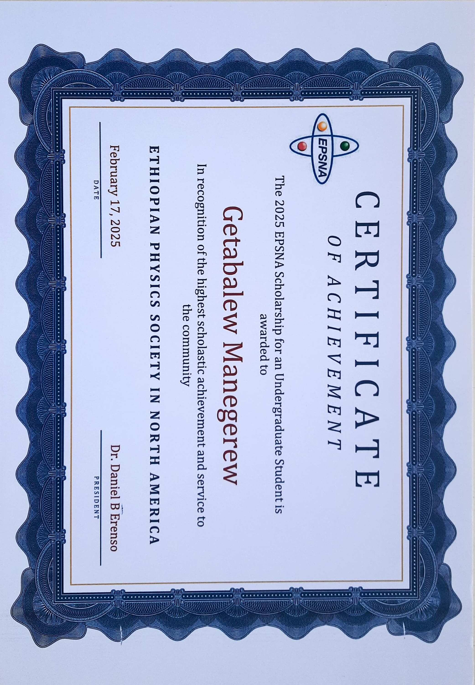
2025 EPSNA Scholarship for an Undergraduate Student
Awarded by: Ethiopian Physics Society in North America (EPSNA)
Date: February 17, 2025
Certificate of Achievement awarded in recognition of the highest scholastic achievement and service to the community.
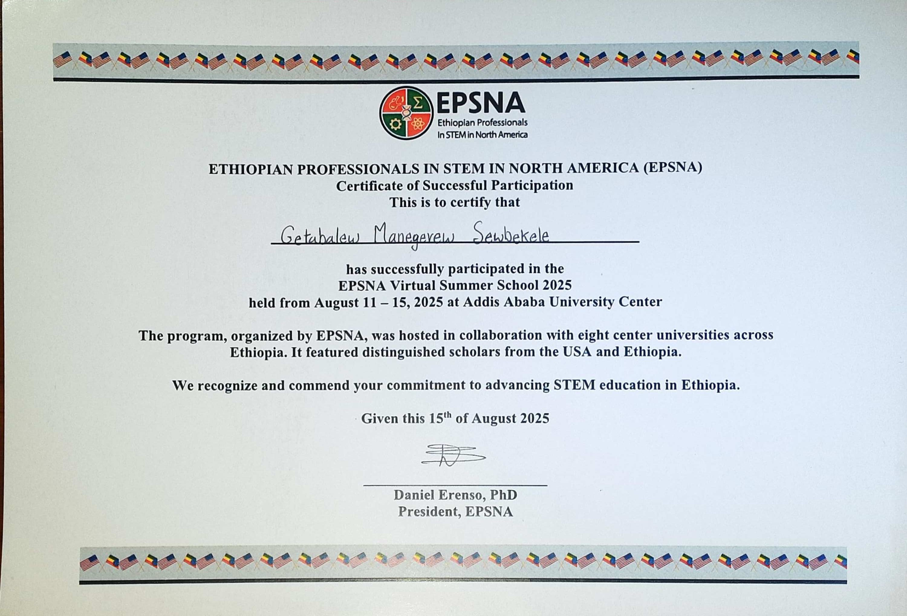
EPSNA Virtual Summer School 2025
Issuer: Ethiopian Professionals in STEM in North America (EPSNA)
Date: August 11 – 15, 2025
Awarded for successful participation in the EPSNA Virtual Summer School hosted at the Addis Ababa University Center.
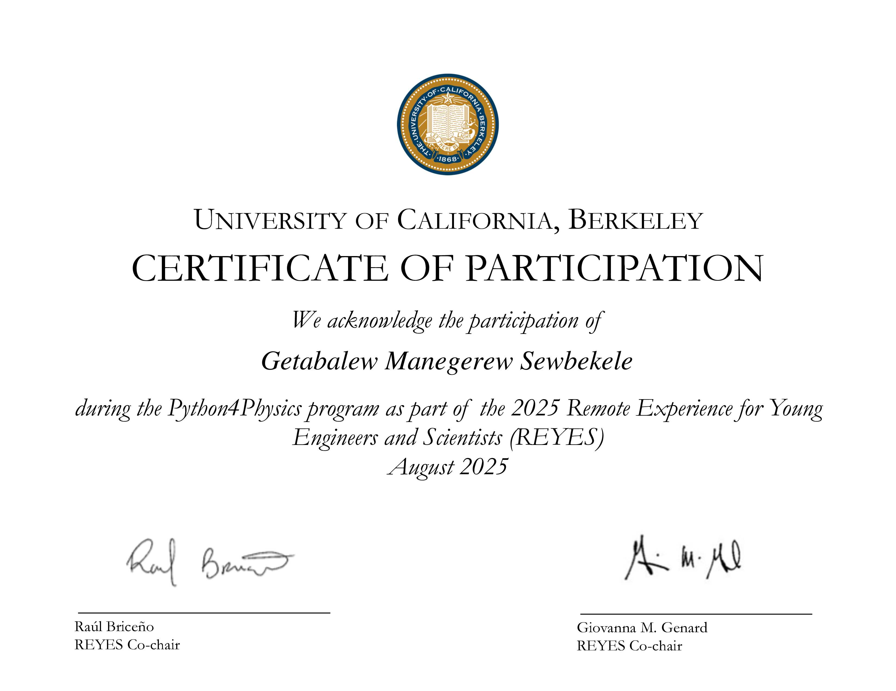
Python4Physics Program
Issuer: University of California, Berkeley
Date: August 2025
Certificate of participation acknowledging involvement in the Python4Physics program as part of the 2025 REYES program.
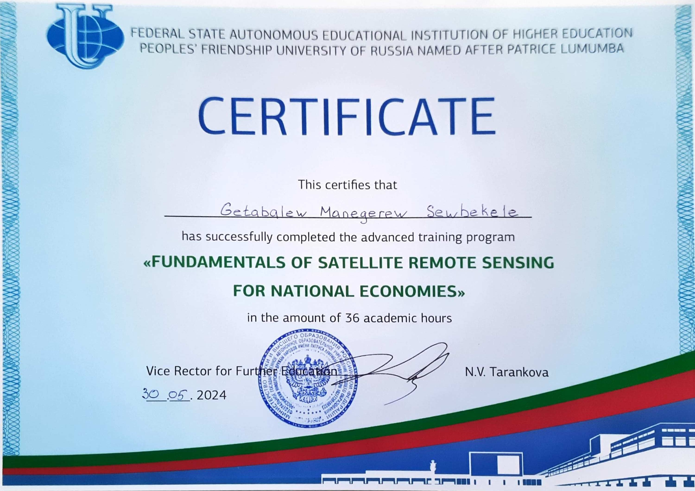
Fundamentals of Satellite Remote Sensing
Issuer: Peoples' Friendship University of Russia (RUDN University)
Date: May 30, 2024
Successfully completed a 36-academic-hour advanced training program focused on Satellite Remote Sensing.

Summer Space School Program
Issuer: Ethiopian Space Science Society
Date: August 07 – 29, 2021
Certificate of Achievement for successfully completing the Summer Space School program at the Addis Ababa Institute of Technology.